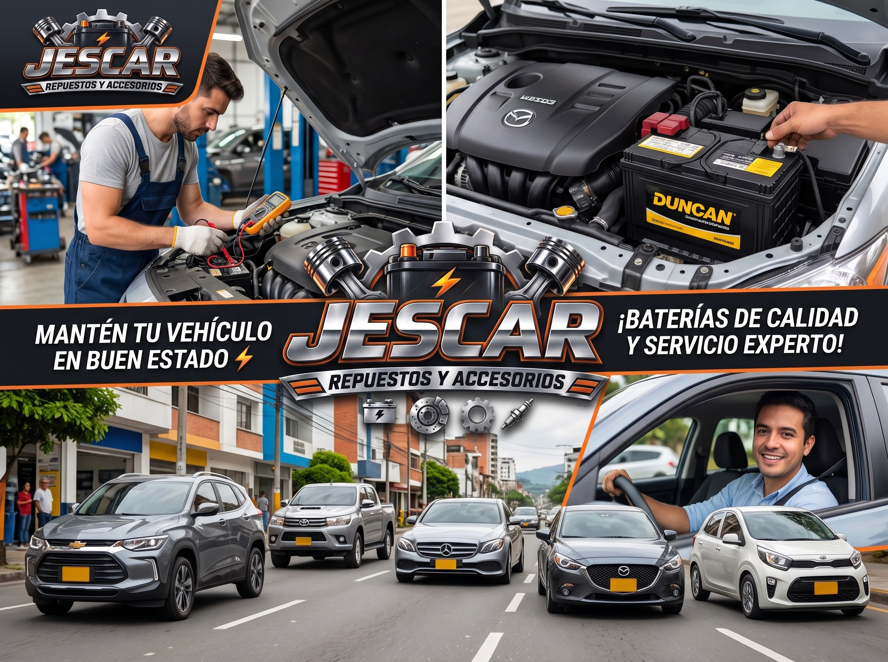

Nuestras 4 Marcas Aliadas
Trabajamos de la mano con los mejores fabricantes del mercado para garantizar energía óptima en todo tipo de vehículos:
- 🔋 Mac — Resistencia y alta adaptabilidad al terreno.
- ⚡ Willard — Tecnología avanzada de aleación de plata y titanio.
- ⚙️ Bosch — Ingeniería alemana de máxima fiabilidad.
- 🚗 ACDelco — Rendimiento superior libre de mantenimiento.
Batería Destacada del Mes

Conoce más sobre especificaciones técnicas en su sitio web oficial.